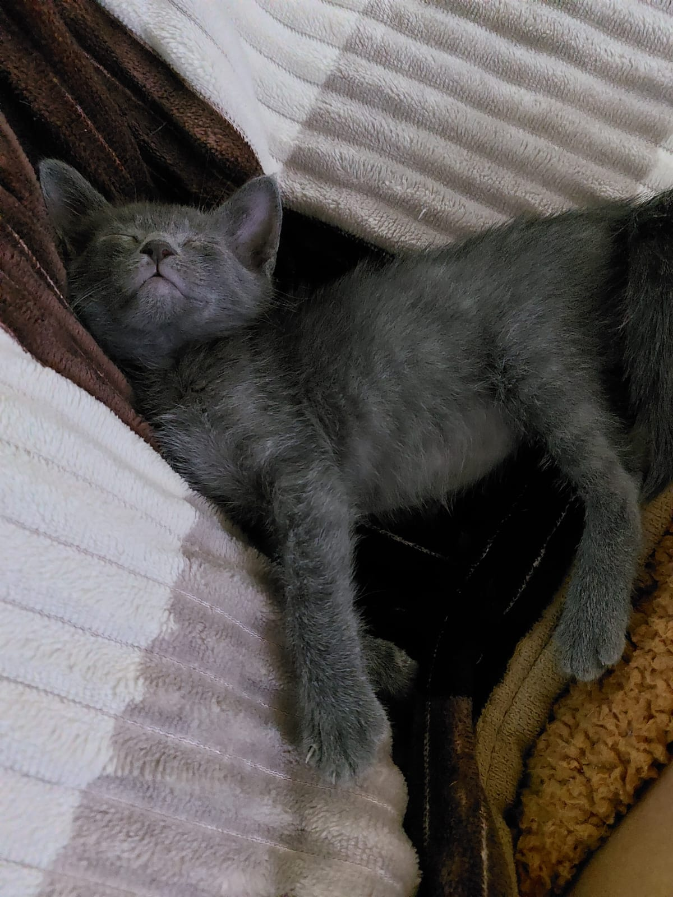

Conociendo a mi gatita
En esta entrada, les presento a mi adorable gatita y les cuento información sobbre ella.
Ella se llama Runa, es de color gris y nacio el día 26/08/2023. Runa tiene un hermano más grande llamado Owen y es de color blanco.
Runa es muy traviesa y glotona, su actividades favoritas son comer y dormir, pero además de eso es super cariñosa y compañera.